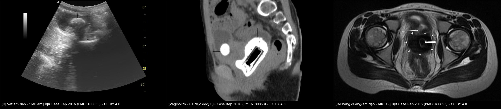
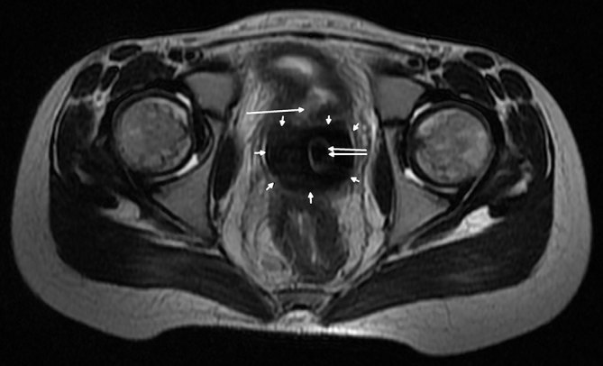
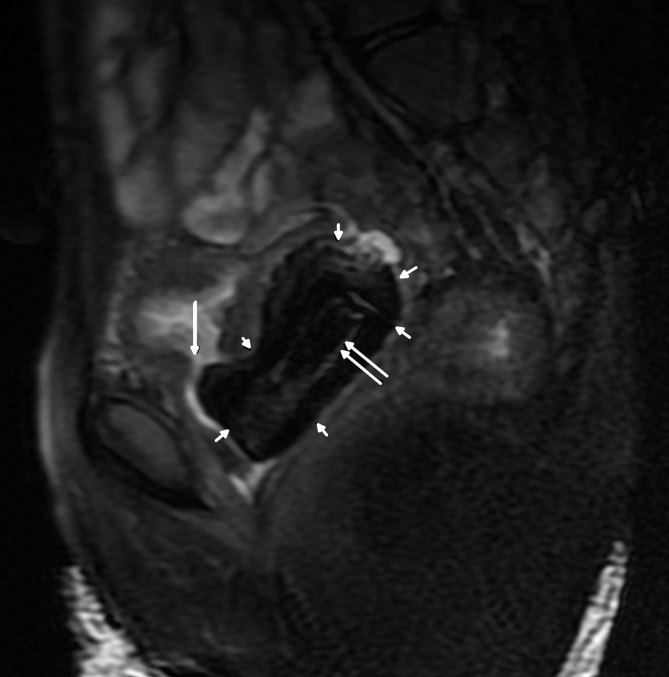

1735 — Dị vật âm đạo ở trẻ (chưa rò): dịch hôi tái diễn, siêu âm đầu tay, vaginolith và khi nào soi âm đạo
Tags: pattern:di-vat pattern:bot-sang pattern:voi-hoa vung:am-dao vung:sinh-duc-nu vung:chau protocol:sieung-am protocol:CT-lieu-thap protocol:MRI protocol:noi-soi
Mức chắc chắn (certainty): tổng hợp y văn (literature synthesis) — gộp tổng quan hệ thống 75 bài/522 bệnh nhi (PMID 38643730), loạt 97 trẻ (PMID 35129659), 73 trẻ đối chiếu siêu âm với soi âm đạo (PMID 42057605), 104 trẻ/120 lần soi âm đạo (PMID 39234926) và một ca nguyên văn 12 tuổi có vaginolith + rò bàng quang–âm đạo (PMC6180853). Chỗ nguồn không đưa số thì ghi "chưa rõ", không suy diễn.
Câu chốt: dị vật âm đạo ở trẻ không phải bệnh cảnh hiếm gặp trên phim mà là bệnh cảnh bị bỏ qua vì quá thường gặp trên lâm sàng: trẻ ra dịch hôi hoặc máu âm đạo tái diễn nhiều tháng, được điều trị lặp lại như "viêm âm đạo", trong khi siêu âm chỉ bắt được ~56–80% và phim bụng chỉ ~33%. Chẩn đoán đúng nằm ở nghi ngờ + siêu âm + soi âm đạo dưới an thần, không nằm ở phim. Nối 1682 – Rò bàng quang–âm đạo ở trẻ (khi đã có rò), 1681 – Di chứng muộn niệu sinh dục và 691 – Sỏi bàng quang ở trẻ.
1. Tổng quan bệnh học – cơ chế hình ảnh
1.1 Vì sao trẻ trước dậy thì dễ bị dị vật và vì sao nó "im lặng"
- Niêm mạc mỏng, thiếu estrogen: âm đạo trước dậy thì là biểu mô trụ–lát mỏng, ít glycogen, pH trung tính, không có lớp bảo vệ của lactobacillus → dễ xây xước, dễ bội nhiễm khi có vật lạ. Dị vật gây loét do chèn ép (pressure necrosis), mô hạt (granulation tissue) và tiết dịch mủ–máu; vì vậy triệu chứng không đặc hiệu và giống viêm âm đạo.
- Tại sao trẻ tự đưa vật vào: giai đoạn 3–10 tuổi là lúc trẻ khám phá cơ thể, vật trong tầm tay là giấy vệ sinh, khăn giấy, bông, nắp chai nhỏ, đồ chơi nhỏ; đây cũng là lý do vật thường mềm, không cản quang → phim bụng âm tính.
- Tại sao thành vaginolith (sỏi âm đạo): dịch tiết giàu calci/phosphate + pH kiềm do nhiễm khuẩn + vật lạ làm khuôn kết tủa → muối calci lắng quanh vật theo thời gian. Trên CT, vỏ calci dày, đậm độ cao (> 100 HU) bao quanh lõi giảm đậm độ (nhựa/khí) của dị vật — đúng hình ảnh "vật trong vỏ trứng" của ca dưới đây. Thời gian tạo sỏi tính bằng tháng đến năm: ca nguyên văn giữ vật 1 năm đã có vaginolith 53 × 29 × 33 mm.
- Tại sao biến chứng muộn là rò: sỏi/vật lạ chèn ép thành âm đạo và thành sau bàng quang liên tục → hoại tử thành → rò bàng quang–âm đạo (vesicovaginal fistula); sỏi âm đạo cũng là nhân của sỏi bàng quang khi cọ sát niêm mạc bàng quang. Hệ quả: rỉ nước tiểu liên tục, viêm thận–bể thận, và mổ vá rò trong mô viêm là ca khó.
- Tại sao đa số không có rò: rò cần thời gian và chèn ép đủ lâu; phần lớn ca được chẩn đoán khi còn dị vật đơn thuần — đây chính là cửa sổ để can thiệp trước khi thành rò.
1.2 Ngưỡng định lượng nằm lòng (bắt buộc nhớ)
| Chỉ số | Con số | Nguồn |
|---|---|---|
| Tuổi | 6 tháng – 16 tuổi, trung bình 6 tuổi 3 tháng; 88% trong 3–10 tuổi (loạt 97 trẻ: 1,5–14,8 tuổi) | PMID 38643730; PMID 35129659 |
| Triệu chứng dẫn đầu | ra máu âm đạo 172/340 (50,6%) và dịch âm đạo 134/340 (39,4%); loạt 97 trẻ: dịch lẫn máu/ra máu 48% | PMID 38643730; PMID 35129659 |
| Vật thường gặp | giấy vệ sinh/khăn giấy 155/447 (34,7%); loạt 97 trẻ: vật cứng nhỏ 57%, vải/giấy 22% | PMID 38643730; PMID 35129659 |
| Siêu âm (gộp) | độ nhạy 79,9% | PMID 38643730 |
| X-quang bụng | độ nhạy 33,3%, âm tính giả nhiều hơn dương tính thật | PMID 38643730 |
| Siêu âm qua thành bụng (TAUS) | Se 55,6% · Sp 41,2% · độ chính xác 52,1% (73 trẻ, chuẩn = soi âm đạo) | PMID 42057605 |
| Siêu âm qua tầng sinh môn (TPUS) | Se 70,4% · Sp 29,4% · độ chính xác 60,6% | PMID 42057605 |
| Biến chứng | 35/522 (6,7%) — loét, nhiễm, vaginolith, rò, hẹp âm đạo | PMID 38643730 |
| Dấu hiệu xâm hại tình dục | 16/522 (3,1%) — thiểu số, không được quy kết mặc định | PMID 38643730 |
| Soi âm đạo (104 trẻ, 120 lần) | 52/120 (43,3%) có chẩn đoán dương; ra máu: dị vật 12,7%, viêm âm hộ–âm đạo 6,9%, papilloma Müllerian 5,8%, chấn thương 4,6%, ung thư 2,3%; dịch: dị vật 20,6%, viêm 20,6% | PMID 39234926 |
| Số lần soi để có chẩn đoán (NNI) | 2,4 khi ra máu, 2,1 khi ra dịch; để phát hiện ung thư 43,0 | PMID 39234926 |
| Ca nguyên văn | 12 tuổi, giữ nắp sơn móng tay 1 năm; vaginolith 53 × 29 × 33 mm; sỏi bàng quang 28 × 25 × 18 mm; rò bàng quang–âm đạo | PMC6180853 |
1.3 Vì sao hình ảnh thấy được (vật lý, không chỉ liệt kê dấu hiệu)
- Siêu âm: dị vật tạo mặt phân cách âm trở kháng lớn với mô mềm/dịch → dải tăng âm (echogenic) kèm bóng lưng (posterior acoustic shadowing). Giấy vệ sinh mềm, thấm dịch, không đủ chênh âm trở kháng → có thể chỉ thấy "dịch trong âm đạo" và một dải tăng âm mờ; đây là lý do Se 55,6–79,9% chứ không phải 100%.
- CT: đậm độ phụ thuộc vật liệu — nhựa/kim loại/pin → cản quang mạnh, giấy/gỗ → gần mô mềm, khí trong vật → giảm đậm độ. Vỏ calci của vaginolith > 100 HU và thường dày, đều, bao quanh lõi giảm đậm độ. CT không cần cản quang, lát ≤ 1 mm, liều thấp ở trẻ.
- MRI: calci mất tín hiệu trên mọi chuỗi (tối đen), vật nhựa tín hiệu trung bình–thấp, dịch ứ T2 sáng. Vì vậy MRI không dùng để "tìm vật" mà để đánh giá biến chứng: khuyết thành sau bàng quang (rò), hẹp âm đạo xơ, dịch ứ buồng tử cung (pyocolpos). Trên T2 xung dày ≤ 3 mm mới thấy được khuyết thành nhỏ.
2. Mẫu hình + chẩn đoán phân biệt theo vị trí (gamut)
Mẫu hình khởi đầu: trẻ trước dậy thì, dịch âm đạo hôi và/hoặc máu âm đạo tái diễn > 2–4 tuần, khám ngoài bình thường hoặc chỉ viêm đỏ tiền đình.
- Trong lòng âm đạo: dị vật (giấy, vải, nắp nhựa, pin), vaginolith, viêm âm đạo do tụ cầu/liên cầu/vi khuẩn kỵ khí, papilloma Müllerian, rhabdomyosarcoma thể chùm nho (botryoid RMS) — u ác hay gặp nhất ở âm đạo trẻ nhỏ, sa ra ngoài như chùm nho.
- Cổ tử cung/buồng tử cung: polyp cổ tử cung, pyocolpos do tắc màng trinh, dị vật đẩy sâu, u cơ trơn (rất hiếm).
- Ngoài âm đạo nhưng gây triệu chứng âm đạo: dị vật bàng quang (sỏi, rỉ tiểu), rò niệu quản lạc chỗ, dị vật hậu môn/trực tràng, lichen sclerosus (ngứa, trắng da, không mùi hôi).
- Toàn thân: dậy thì sớm (ra máu đều chu kỳ, tuyến vú phát triển), rối loạn đông máu (chảy máu kèm vết bầm, tiền sử gia đình), suy giáp (ra máu kèm chậm phát triển).
- Do can thiệp/người lớn: xâm hại tình dục (3,1%), chấn thương khung chậu (thường kèm di chứng niệu dục muộn — bài 1681).
Mnemonic theo vị trí — "V-A-G-I-N-A": Vật lạ, Am đạo viêm, Giấy/vải (vật mềm), I nhiễm khuẩn, Nang/papilloma, Ac (ung thư: RMS).
3. Bảng so sánh phân biệt (ma trận đối chiếu)
| Thực thể (entity) | Hình ảnh điển hình | Chốt vào (rule-in) | Chốt loại (rule-out) | Gợi ý xác nhận |
|---|---|---|---|---|
| Dị vật âm đạo đơn thuần | US: dải tăng âm + bóng lưng trong lòng âm đạo, dịch ít; CT: cấu trúc đậm độ khác mô mềm, có thể có khí | Dải tăng âm có bóng lưng + lệch trục âm đạo trên US | Âm đạo rỗng, không bóng lưng, chỉ dịch → nghi viêm đơn thuần | Soi âm đạo dưới an thần (chuẩn vàng), lấy vật |
| Vaginolith | Vỏ calci dày > 100 HU bao lõi giảm đậm độ; trên T2 viền tối đen; thường kèm sỏi bàng quang | Vỏ calci bao quanh lõi khác đậm độ = vật lạ hóa sỏi | Chỉ có sỏi bàng quang, âm đạo trống → không phải vaginolith | CT ≤ 1 mm; soi âm đạo lấy cả vật + sỏi |
| Viêm âm hộ–âm đạo | Không có cấu trúc trong lòng; niêm mạc dày, dịch; không bóng lưng | Dịch + niêm mạc viêm, không có cấu trúc chiếm chỗ | Có dải tăng âm/bóng lưng → phải loại dị vật | Cấy dịch; soi âm đạo nếu tái diễn |
| Papilloma Müllerian | Nốt nhỏ sa ra tiền đình, US thấy nốt đặc nhỏ ở cùng đồ; lành tính | Nốt nhỏ, mềm, không calci, không phá hủy | Nốt lớn, hoại tử, chảy máu nhiều → nghĩ RMS | Sinh thiết/cắt bỏ qua soi |
| Rhabdomyosarcoma thể chùm nho | Khối sa ra ngoài như chùm nho, T2 trung bình–cao, ngấm thuốc mạnh, không calci | Khối thịt sa ra tiền đình ở trẻ < 5 tuổi | Tổn thương chỉ trong lòng, có vỏ calci → dị vật/vaginolith | MRI + sinh thiết (không nạo mù) |
| Dậy thì sớm | Tử cung to, nội mạc dày, buồng trứng có nang; không có cấu trúc trong âm đạo | Tuyến vú + tử cung to + nang buồng trứng | Không có dấu hiệu dậy thì → loại | X-quang tuổi xương, hormon |
| Xâm hại/chấn thương | Rách màng trinh, bầm tím, có thể có vật lạ; không có vỏ calci | Tổn thương cấp + bối cảnh | Tổn thương mạn, không đau → nghĩ dị vật bỏ quên | Khám pháp y, soi âm đạo, chụp theo quy trình |

Trái: siêu âm — sỏi bàng quang (mũi tên) và bóng tăng âm trong âm đạo (mũi tên đôi). Giữa: CT trục dọc — vaginolith vỏ calci bao quanh lõi giảm đậm độ của nắp nhựa (đầu mũi tên). Phải: MRI T2 trục ngang — viền tối đen của calci, khuyết thành sau bàng quang (rò). BJR Case Rep 2016 (PMC6180853), CC BY 4.0; ảnh ghép letterbox.Ba dấu hiệu quyết định trên mặt cắt
- "Vật trong vỏ trứng" (calcified rim + lucent core): đây là chốt vào của vaginolith, không phải sỏi bàng quang di chuyển — sỏi bàng quang đặc hoặc có nhân, nằm trong lòng bàng quang, không có lõi khí/nhựa.
- Bóng lưng (posterior shadowing) định vị theo trục âm đạo: trên siêu âm trục dọc qua tầng sinh môn, bóng lưng nằm sau bàng quang và trước trực tràng; nếu bóng lưng nằm trong bàng quang thì đó là sỏi tiết niệu, không phải dị vật âm đạo.
- Mất liên tục thành sau bàng quang trên T2: khuyết thành kèm dịch/khí trong bàng quang = rò; cần thì đi tiểu (VCUG/CT cystography) để thấy rò mà thì nghỉ không thấy (nguyên lý "van một chiều" của VVF — bài 1682).
4. Protocol chụp + hệ phân độ/điểm chuẩn hóa
4.1 Thứ tự đúng (không chụp ngược)
- Khám ngoài + hỏi bệnh kín đáo (không thăm khám bằng ngón tay/mỏ vịt ở trẻ chưa dậy thì), lấy mẫu dịch nếu có.
- Siêu âm bụng–chậu:
- Qua thành bụng với bàng quang đầy (bơm nước tiểu hoặc chờ): đánh giá tử cung, buồng trứng, dịch ứ, sỏi bàng quang.
- Qua tầng sinh môn (transperineal) trục dọc + ngang: đây là cửa sổ tốt nhất để thấy dị vật trong âm đạo (Se 70,4% so với 55,6% của TAUS) — nhưng Sp chỉ 29,4%, nên dương tính giả vẫn phải soi xác nhận.
- X-quang bụng: KHÔNG dùng để loại trừ (Se 33,3%). Chỉ dùng khi nghi pin/ắc quy hoặc vật kim loại.
- CT chậu liều thấp, không cản quang, lát ≤ 1 mm khi: nghi vật cản quang/vaginolith, cần mô tả vị trí tương quan với bàng quang–trực tràng, hoặc có sỏi bàng quang mà chưa rõ nguồn.
- MRI 1,5 T (T2 sagittal + axial, T2 FS, ± DWI) khi nghi rò, hẹp âm đạo, hoặc khối u — không phải để "tìm vật".
- Soi âm đạo dưới an thần = tiêu chuẩn vàng (chẩn đoán + điều trị một thì): dùng ống soi mềm/ hysteroscope cỡ nhỏ, bơm dịch ấm để mở lòng, lấy toàn bộ vật, kiểm tra toàn bộ niêm mạc, cấy mủ, và soi lại nếu còn nghi.
Ngưỡng hành động: siêu âm âm tính không loại trừ khi triệu chứng kéo dài — với Se 55,6–79,9%, cứ 4–5 trẻ có dị vật thì 1–2 trẻ bị bỏ sót; NNI để có chẩn đoán chỉ 2,4 → soi âm đạo sớm là hợp lý về chi phí chẩn đoán.
4.2 Xử trí sau khi lấy vật
| Tình huống | Xử trí | Căn cứ |
|---|---|---|
| Niêm mạc nguyên vẹn | Không cần điều trị thêm, hẹn khám lại nếu triệu chứng tái diễn | 97 trẻ: hồi phục hoàn toàn sau lấy vật, không cần điều trị thêm (PMID 35129659) |
| Niêm mạc xây xước/loét | Kháng sinh chống bội nhiễm, theo dõi 1–2 tuần | cùng nguồn |
| Pin/ắc quy (button battery) | Lấy CẤP CỨU — bỏng kiềm tiến triển trong giờ, gây hoại tử và rò | ca 8 tuổi bỏng kiềm niêm mạc âm đạo (PMID 25817765); loạt 97 trẻ: ca pin đĩa có triệu chứng nặng nhất |
| Vaginolith/rò/hẹp | Lấy vật + xử trí rò/hẹp theo bài 1682; không vá rò trong mô viêm cấp | PMC6180853; bài 1682 |
4.3 Sơ đồ tiếp cận
flowchart TD A[Trẻ trước dậy thì: dịch hôi hoặc máu âm đạo tái diễn] --> B[Khám ngoài + cấy dịch] B --> C[Siêu âm qua thành bụng + qua tầng sinh môn] C -->|Có cấu trúc tăng âm/bóng lưng| D[Soi âm đạo dưới an thần: lấy vật] C -->|Âm tính nhưng triệu chứng dai dẳng| E[Soi âm đạo: Se siêu âm chỉ 55,6–79,9%] C -->|Nghi vật cản quang, vaginolith, sỏi| F[CT chậu liều thấp ≤ 1 mm] C -->|Nghi rò, hẹp, khối u| G[MRI T2 sagittal/axial + FS] F --> D G --> D D -->|Niêm mạc lành| H[Không điều trị thêm, dặn tái khám] D -->|Xây xước/loét| I[Kháng sinh + theo dõi] D -->|Pin/ắc quy| J[Lấy cấp cứu + đánh giá bỏng kiềm]
Không có hệ phân độ/điểm chuẩn hóa cho dị vật âm đạo. Cái cần "chấm điểm" là mức độ tổn thương niêm mạc và sự hiện diện của biến chứng (vaginolith, rò, hẹp) — ghi rõ trong biên bản soi, không dùng RADS.
5. Biến thể bình thường và cạm bẫy
- Biến thể bình thường dễ nhầm: nang Gartner/ống Müllerian tồn tại (nang dọc thành trước âm đạo, dịch trong, không bóng lưng); màng trinh có lỗ nhỏ gây ứ dịch (pyocolpos) — khác dị vật ở chỗ không có cấu trúc đặc trong lòng và không bóng lưng.
- Bẫy 1 — "viêm âm đạo tái phát": trẻ được điều trị kháng sinh/kháng nấm nhiều đợt vì dịch hôi, không ai soi âm đạo. Trong tổng quan hệ thống, dịch âm đạo là lý do soi phổ biến và 20,6% có dị vật; bỏ sót kéo dài hàng tháng đến hàng năm → vaginolith, rò (ca nguyên văn: 1 năm, vaginolith 53 mm + rò).
- Bẫy 2 — tin phim bụng: X-quang Se 33,3%, âm tính giả nhiều hơn dương tính thật vì vật nhựa/giấy không cản quang và bị xương chậu che. Phim bụng bình thường không loại trừ bất cứ điều gì.
- Bẫy 3 — bỏ sót "kẻ bắt chước": có sỏi bàng quang không có nghĩa là xong — sỏi bàng quang ở trẻ gái có thể thứ phát sau dị vật âm đạo/vaginolith; phải soi âm đạo tìm vật (ca nguyên văn có cả hai: sỏi bàng quang 28 × 25 × 18 mm + vaginolith).
- Bẫy 4 — bóng lưng của khí trong trực tràng/bàng quang bị đọc nhầm là dị vật; luôn đối chiếu vị trí giải phẫu trên hai mặt cắt trực giao.
- Bẫy 5 — quy kết xâm hại tình dục: chỉ 3,1% ca có bằng chứng; đa số do trẻ tự đưa vật vào. Không được kết luận xâm hại chỉ vì có dị vật, nhưng phải khám theo quy trình và ghi nhận tổn thương.
- Bẫy 6 — lấy vật mà không kiểm tra toàn bộ âm đạo: có ca nhiều vật hoặc vật đẩy sâu sau cùng đồ; soi đến cùng đồ, bơm dịch, kiểm tra 360°.
6. Tự lượng giá — Blind Quiz
Ca 1 — Bé gái 12 tuổi, rỉ nước tiểu liên tục 6 tháng, khám thấy viêm đỏ vùng âm hộ.

- Gợi ý lâm sàng: trước dậy thì, không đái dầm, rỉ tiểu liên tục; không sốt.
- Câu hỏi: Có mấy bất thường? Cấu trúc nào nằm sau bàng quang? Cần làm gì tiếp theo và không được làm gì?
Bấm để hiện đáp án (findings + chẩn đoán)
- Findings: (1) sỏi bàng quang — ổ tăng âm hình vòm kèm bóng lưng trong lòng bàng quang (mũi tên); (2) dải tăng âm có bóng lưng nằm sau bàng quang, trước trực tràng = dị vật trong âm đạo (mũi tên đôi).
- Chẩn đoán: dị vật âm đạo bỏ quên đã gây sỏi bàng quang; rỉ tiểu liên tục gợi ý rò bàng quang–âm đạo (cần VCUG/CT cystography thì đi tiểu).
- Vì sao: vật lạ tạo mặt phân cách âm trở kháng lớn → tăng âm + bóng lưng; sỏi bàng quang hình thành trên nền viêm do vật cọ sát.
- Không được: tin phim bụng âm tính, hoặc chỉ điều trị sỏi bàng quang mà bỏ âm đạo.
- Nguồn ảnh: BJR Case Rep 2016 (PMC6180853), Hình 1, CC BY 4.0.
Ca 2 — Cùng bệnh nhi, CT chậu không cản quang.

- Câu hỏi: Mô tả hai lớp của khối trong âm đạo. Vì sao có lõi giảm đậm độ? Chẩn đoán?
Bấm để hiện đáp án
- Findings: khối 53 × 29 × 33 mm trong âm đạo với vỏ calci dày bao quanh lõi giảm đậm độ 36 × 18 mm có khí bên trong (đầu mũi tên); sỏi bàng quang 28 × 25 × 18 mm (mũi tên ngang).
- Chẩn đoán: vaginolith trên nắp nhựa sơn móng tay giữ 1 năm.
- Vì sao: muối calci kết tủa quanh vật xốp theo thời gian → vỏ > 100 HU; lõi nhựa + khí giữ đậm độ thấp → hình "vật trong vỏ trứng".
- Clincher: vỏ calci bao quanh một cấu trúc không phải mô — không gặp ở sỏi tiết niệu.
- Nguồn ảnh: BJR Case Rep 2016 (PMC6180853), Hình 2, CC BY 4.0.
Ca 3 — Cùng bệnh nhi, MRI T2 trục ngang.

- Câu hỏi: Dấu hiệu nào chứng minh đã có rò? Vì sao phải chụp thì đi tiểu?
Bấm để hiện đáp án
- Findings: khuyết thành sau bàng quang (mũi tên lớn) đối diện vaginolith viền tối đen (nhiều mũi tên nhỏ) và dị vật tín hiệu trung bình (mũi tên đôi).
- Chẩn đoán: rò bàng quang–âm đạo do chèn ép mạn của vaginolith.
- Vì sao: calci mất tín hiệu trên T2 → viền đen; rò chỉ thấy khi có dòng nước tiểu qua lỗ rò, nên phải chụp thì đi tiểu (VCUG/CT cystography) — thì nghỉ có thể bỏ sót.
- Xử trí: lấy vật, xử trí sỏi, vá rò khi hết viêm (bài 1682).
- Đối chiếu thêm mặt cắt dọc có xóa mỡ — lỗ rò và mức độ lan của viêm quanh âm đạo rõ hơn:

- Nguồn ảnh: BJR Case Rep 2016 (PMC6180853), Hình 4 và Hình 5, CC BY 4.0.
Bài liên quan chéo
- 600 – Tổng quan Nhi khoa
- 1682 – Rò bàng quang–âm đạo ở trẻ
- 1734 – Rò trực tràng–âm đạo ở trẻ
- 1681 – Di chứng muộn niệu sinh dục ở bé gái
- 691 – Sỏi bàng quang và sỏi quanh catheter ở trẻ
- 643 – Chấn thương dây chậu sinh dục nhi
Không dùng để chẩn đoán độc lập khi chưa có người hướng dẫn.